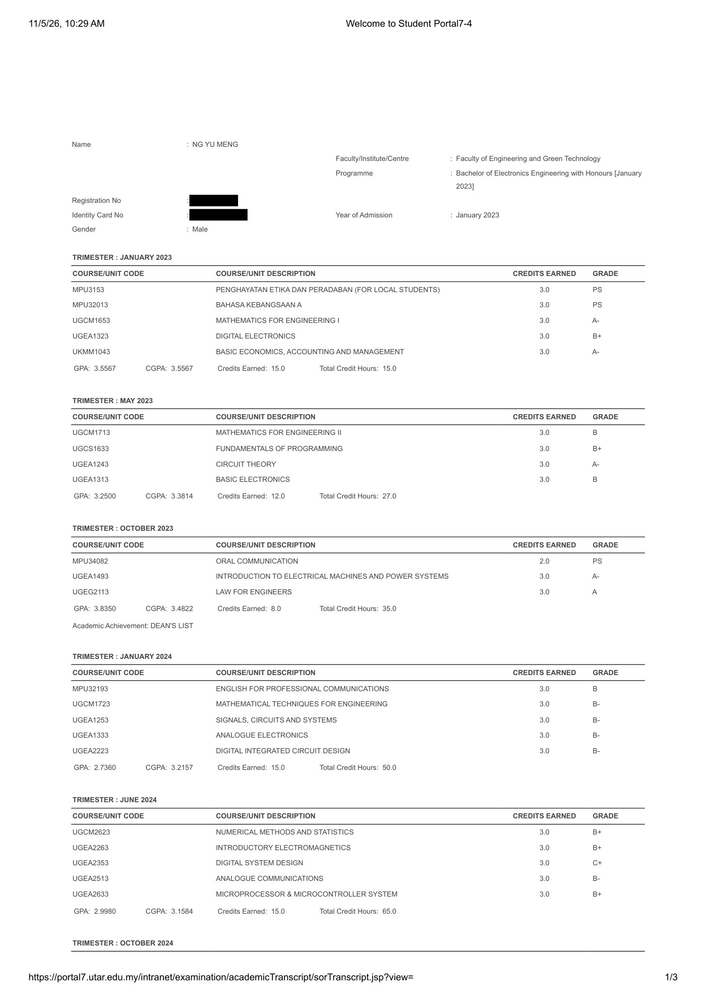
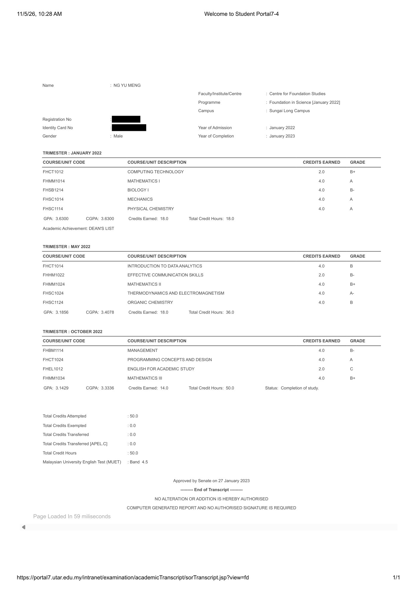
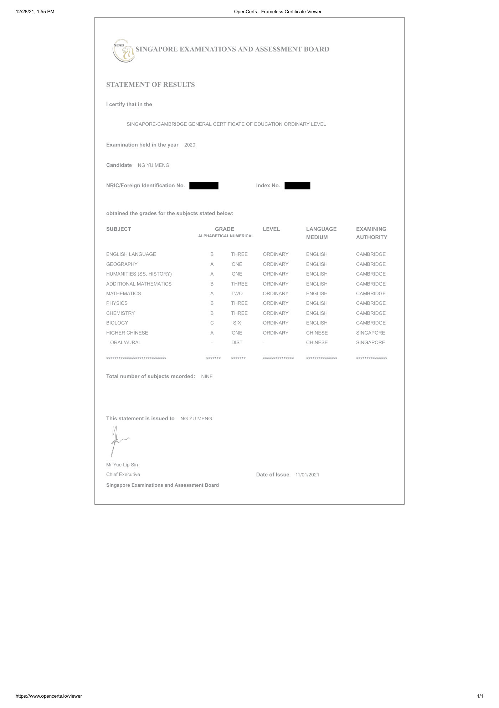

UTAR · January 2023 to presentBachelor of Electronics Engineering (Honours)
CGPA 3.32, with two Dean's List awards.
Coursework · UTAR
Programming / embedded control / digital hardware / DSP
The toolkit handles base and ASCII conversion, parity checks and truth tables, together with logic-device outputs and signed-binary values.
The truth-table rules of each Boolean gate are translated into program logic.
The submitted flow diagrams record how input is validated and how a function is selected, along with the repeat-control paths.
 8051 elevator control interface diagram
8051 elevator control interface diagram Elevator startup and emergency flowchart
Elevator startup and emergency flowchart Third-floor elevator control flowchart
Third-floor elevator control flowchartThe elevator is modelled on an 8051.
The work includes a state table and K-map, a D flip-flop module, a clock divider and the Quartus schematic.
Microcontroller routines process the calls and set the motor direction, the same routines also handle alarms and floor indication.
Each state transition is checked against both the hardware and the software evidence.
The design is written in gate-level Verilog.
Op-amp summing, inverter and comparator stages set two switching thresholds near the setpoint, hence the output will not toggle repeatedly when the input hovers near it.
Laboratory and design work on CMOS device behaviour and on how logic is implemented with it.
Control concepts were studied together with practical circuit construction, and the response of each circuit was then interpreted.
 Low-pass FIR response in time and frequency domains
Low-pass FIR response in time and frequency domains High-pass FIR response in time and frequency domains
High-pass FIR response in time and frequency domainsFIR filters are designed and their response is analysed with time-domain and frequency-domain graphs.
A Python dashboard reads the ESP32 serial data.
P300 decoding with vision-guided target selection, the selected target is then prepared for the robotic arm.

UTAR · January 2023 to presentCGPA 3.32, with two Dean's List awards.

UTAR Sungai Long · January 2022 to January 2023CGPA 3.33, with a Dean's List award in the first trimester. MUET Band 4.5.

SEAB · 2020 examinationNine subjects, with A1 in Geography, Humanities and Higher Chinese.